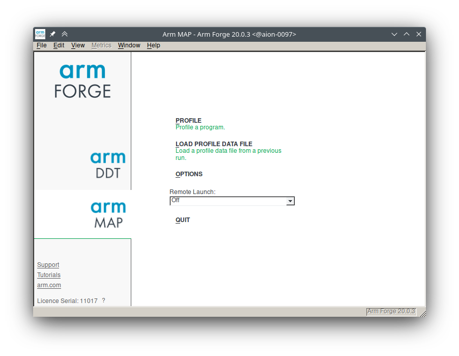
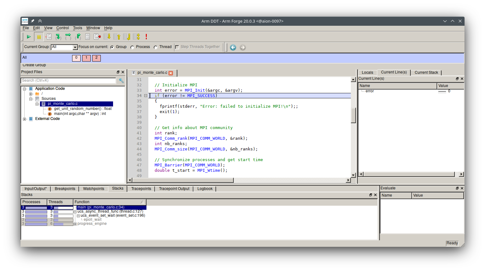

Debugging and Profiling
- Author: Xavier Besseron (University of Luxembourg)
- License: ©2024 CC BY-NC-SA 4.0
- Date of practical: Tuesday 5th of March 2024
🔵 Introduction
This practical session focuses on the debugging and profiling of parallel applications on HPC. Debugging and profiling are both crucial because they directly impact code reliability and efficiency.
- Debugging helps pinpoint errors and crashes within the complex, massively parallel code typical of HPC applications.
- Profiling uncovers performance bottlenecks and helps identify optimization opportunities to ensure that expensive HPC resources are used optimally.
These techniques work together to accelerate code development and ensure that the results generated by HPC are accurate and achieve the best possible performance.
Objectives
This work proposes concrete examples of profiling and debugging parallel applications on HPC:
- Performance Characterization
- Performance Profiling
- Debugging
The exercises will also refer to external documentation and instructions that need to be consulted. The aim is for you to be independent and work in 'real conditions' by finding the information you need to complete the task.
Instructions
This practical is an individual work to be carried out on the Aion cluster of the HPC platform of the University of Luxembourg.
It is composed of different elements:
- this page that contains instructions and questions;
- the GitHub Classroom repository that contains the materials for the exercises;
- the report that you have to submit via GitHub Classroom with the rest of the requested documents
Report
Together with this tutorial, you need to prepare a short report of your work:
- There is no template, you can start from a blank document. Keep it simple, clear and well-organized.
- Make sure you answer all the questions (cf below), with text, code or screenshots as requested.
- Prepare your report at the same time you're doing the exercises.
- Submit your report as a PDF file to your GitHub Classroom repository and push it before the deadline.
Question 1: What? Who? When?
Indicate at the beginning of your report:
- the title of the practical
- your full name
- your Uni.lu HPC username
- your GitHub username
- the date
🔵 Part 0: Setup
GitHub Classroom Repository
Following the same approach as the previous practicals, this practical relies on Git Classroom to distribute the extra materials and for the submission of the report. To create your copy of the repository, follow the invitation link and accept the assignment:
Assignment link: https://classroom.github.com/a/MJWASTD7
If you need detailed explanations, please refer to the first week's instructions for Setting up Git and downloading the materials.
Interactive Graphical Session
Some of the tools used in this practical are graphical tools that require an X11 server.
On Windows: Start an X11 server and enable X11-forwarding
If you're using Windows, you need to setup an X11 server and start it before connecting to the HPC. The easiest way is to install and use MobaXterm. To start the X11 server, click to top right icon.
Then, if make sure to enable X11-forwarding for your connection to the HPC.
On MacOS X: Start an X11 server and enable X11-forwarding
If you're using MacOS X, you need to setup an X11 server and start it before connecting to the HPC. You can follow the instructions on this page to set it up:
Then, if make sure to enable X11-forwarding for your connection to the HPC.
ssh -X aion-cluster
On Linux: Enable X11-forwarding
If you're using Linux or MacOS, use the -X options on your SSH command to enable X11-forwarding for your connection to the HPC. For example
ssh -X aion-cluster
Connection to a Compute Node
The exercises are to be carried out in interactive mode on a compute node of the Aion cluster of the University of Luxembourg.
As a reminder, here are the steps to access a compute nodes:
- Connect to the access node of the Aion cluster (cf Connection to HPC Access)
- Find your reservation, if application (cf Finding your reservation)
- Connect to a compute node (cf Connection to a compute node)
Recommended Settings
For this practical session, the following options are suggested:
- Partition:
interactive - QoS:
debug - Reservation:
hpc_software_d05during the Tuesday afternoon session - Time: 2 hours (or ending before the end of the reservation)
- Node: One compute node
- Tasks: 32 tasks
- Cores: 1 core per task
- Enable X11 forwarding:
--x11
Your access command line should look like this:
salloc -p interactive --qos debug --reservation=hpc_software_d05 --time=2:00:00 -N 1 -n 32 -c 1 --x11
Failed to access a computing node?
The message salloc: error: No DISPLAY variable set, cannot setup x11 forwarding indicates that you did not enable X11 forwarding when you first connected to the access node.
🔵 Part 1: Performance Characterization
Introduction
For this first exercise, we will do the performance characterization of a parallel Computational Fluid Dynamics simulation based on the OpenFOAM software. This toy example calculates the airflow around a motorbike. It is the same example that you have used in the first practical.

We will use the Performance Reports analysis tool that provides a summarized view of an application's performance characteristics. It can identify whether the application is primarily:
- CPU-bound: Limited by how fast the processor can execute instructions;
- MPI-bound: Limited by communication overhead in distributed computing environments;
- I/O-bound: Limited by how fast it can read/write data (e.g., hard disk, network);
- Python interpreter-bound: Limited by the overhead of running in the Python environment.
The generated reports are concise and readable: they are designed to be easily understood, offering insights even when you don't have direct access to the application's source code.
Performance Reports is a commercial tool
Performance Reports is part of the Linaro Forge tool suite that was previously known as Arm Forge or Allinea Forge. It is a commercial tool that requires a licence to be used, and thus it is not available on all the HPC platforms.
Using Performance Reports on Uni.lu HPC
The University of Luxembourg has purchased a license for the Performance Reports tool and it is available to use for the user of the HPC platform. The version installed on the Uni.lu HPC is 20.0.3 which was released by Arm. Thus we will call it Arm Performance Reports.
On the Aion and Iris cluster, Arm Performance Reports is available via the module tools/ArmReports/20.0.3 and the command line executable is named perf-report.
Submission script
Performance Reports can be used in a non-interactive way, simply by prefixing your mpirun command with perf-report.
Check perf-report --help for more details and options on how to use it. Don't forget to load the module first.
To characterize the performance of our application, we will create a submission script.
We will start from the script that we developed during the first practical and adapt it to use Performance Reports.
In your GitHub Classroom repository, there is a directory named motorBike-input. It contains the input files and the submission script for the motorbike simulation.
- Make a copy of the input directory to a new directory named
motorBike-PERFREPORT-06 - In the
motorBike-PERFREPORT-06directory, edit the submission script to use Performance Reports:- Use 6 computing cores
- Load the needed module
- Set the working directory
- Adapt the
mpiruncommand line
- Submit your script to SLURM with
sbatch - Monitor the execution and check the SLURM log file to ensure the execution is successful.
After successful execution, you will get two new files (named simpleFoam_XXX.html and simpleFoam_XXX.txt) in your execution directory.
They both contain the results of the performance analysis and the performance characterization of the application.
- The
.txtfile is suitable for a quick look in the terminal using a tool likeless. - The
.htmlfile offers nicer formatting and is more suitable to look at from a web browser after downloading it to your laptop.
Question 2: Performance Reports of the MotorBike simulation on 6 cores
In your GitHub Class repository, add the following files to the perfreport directory:
- The adapted submission script that runs the performance analysis of the motorbike simulation on 6 cores;
- The two performance reports (
.txtand.html) of the performance analysis.
Looking at the report, can you tell:
- What is the main bottleneck for the performance of this application? Percentage spent?
- What is the second factor limiting the performance? Percentage spent?
- How much (in percentage) represents the rest? What does it correspond to?
Thinking in terms of roofline analysis,
- Is this application limited by the compute operations or the memory accesses?
- Would this execution benefit from using more vectorized instructions?
Based on this report,
- What is your main recommendation to improve the performance of this simulation?
Justify and write down the answers in your report.
Execution at a larger scale
Now, let's run the same analysis for an execution with more resources. Create a new directory and adapt the submission script for an execution on 24 cores.
Question 3: Performance Reports of the MotorBike simulation on 24 cores
In your GitHub Class repository, add the following files to the perfreport directory:
- The adapted submission script that runs the performance analysis of the motorbike simulation on 24 cores;
- The two performance reports (
.txtand.html) of the performance analysis.
Looking at the new report,
- Describe in a few lines the main changes in the results, compared to the execution on 6 cores.
- What is the change in the execution time? What is the speedup?
- Is there a significant change in the time spent in I/O?
Justify and write down the answers in your report.
🔵 Part 2: Performance Profiling
For this part, we use Arm/Linaro MAP to profile the same OpenFOAM motorbike simulation.
At the difference of Performance Reports, MAP will provide a more detailed trace of the simulation over this execution.
To profile an application with MAP, there is no need to modify the code.
However, it could display better results if the debug flag -g is enabled during the compilation.
MAP is a commercial tool
MAP is part of the Linaro Forge tool suite and was previously known as Arm Forge or Allinea Forge. Similarly to Performance Reports, it is a commercial tool that requires a licence to be used, and thus it is not available on all the HPC platforms.
Using MAP on Uni.lu HPC
The University of Luxembourg has purchased a license for Arm Forge (including MAP and DDT) and it is available to use for the user of the HPC platform. The version installed on the Uni.lu HPC is 20.0.3 which was released by Arm.
On the Aion and Iris cluster, Arm MAP is available via the module tools/ArmForge/20.0.3 and the command line executable is named map.
In practice, there are two phases in the process of performance analysis and optimization:
- Phase 1: Profiling (Data Collection). It corresponds to the actual act of running your system while MAP is collecting performance data.
- Phase 2: Exploration and Analysis of Results. Because the profiling data is often vast and complex, good visualization tools are essential. They help to create a good interpretation of the problems, identifying Bottlenecks and understanding the root causes.
MAP relies on a graphical interface that can be used for both phases:
When MAP starts, you can select the program to profile, set the parameters and various options and then start the profiling on all your computing nodes.
Alternatively, the profiling phase can be done non-interactively, simply by prefixing the mpirun command line with the map --profile command.
Question 4: Interactive vs non-interactive profiling
In your opinion, what are the advantages of using non-interactive profiling over directly opening the graphical interface and setting it up manually?
Submission script
Let's use a non-interactive profiling. You can use map --help to see the command line options. Don't forget to load the module first.
To profile the motorbike simulation, we will create a submission script.
And again, we will start from the template script available in motorBike-input.
- Make a copy of the input directory
motorBike-inputto a new directory namedmotorBike-MAP-06 - In the
motorBike-MAP-06directory, edit the submission script to use MAP:- Use 6 computing cores
- Load the needed module
- Set the working directory
- Adapt the
mpiruncommand line
- Submit your script to SLURM with
sbatch - Monitor the execution and check the SLURM log file to ensure the execution is successful.
After successful execution, you will get one new file (named simpleFoam_XXX.map) in your execution directory.
It contains the results of the performance profile of the application.
Question 5: Profiling of the MotorBike simulation on 6 cores
In your GitHub Class repository, add the following files to the profiling directory:
- The adapted submission script that runs the profiling of the motorbike simulation on 6 cores;
- The result trace (file
simpleFoam_XXX.map) of the performance profiling.
Visualizing the profiling results
To explore the profiling results, you can open the MAP graphical interface simply by executing the map command in your terminal. Make sure you have loaded the ArmForge module first.
module load tools/ArmForge/20.0.3
map
If you have set up the X11-forwarding correctly, the MAP window should appear.

Cannot open the MAP interface?
The MAP interface does not show up? Check the error message in your terminal:
- Error
bash: map: command not foundmeans that you did not load theArmForgemodule. - Error
map: cannot connect to X servermeans that you did not enable X11-forwarding when connecting to the access node or compute node.

To load the performance profile of the motorbike simulation:
- Click on the "Arm MAP" tab on the left;
- Click on "Load Profile Data File" in the middle;
- Search for the profile data file
simpleFoam_XXX.mapthat you have been generated.
Once loaded, you should see a timeline with different metrics and many other panels. Check the online documentation to understand the role of the different panels. MAP follows the same color code as Performance Reports: the CPU metrics are in green; the MPI metrics are in blue; the memory metrics are in red; and the I/O metrics are in orange.

In our example, the source files are not visible in the middle panel because OpenFOAM has been compiled without the debugging information.
Question 6: Exploring the metrics views in MAP
In the MAP user interface,
- Select the metrics preset CPU Instructions:
- What is the type of CPU instructions that occupy the CPU most of the time?
- Take a screenshot.
- Select the metrics preset MPI:
- What is the average amount of data sent by MPI over the whole simulation?
- If you select the first seconds of the simulation, how does this value change?
- Take a screenshot.
- Select the metrics preset IO:
- Can you identify how many times the OpenFOAM output is written to disk during the whole simulation?
- Does this match with the files present in the execution directory?
- Take a screenshot.
Add all the screenshots and your answers to your report.
Question 7: Exploring the Thread Stacks in MAP
In the bottom panel of the MAP user interface, select the tab Main Thread Stacks:
- In which function is done most of the MPI communication? (remember the color code)
- Save a screenshot in your report.
Add the screenshot and your answer to the report.
🔵 Part 3: Debugging
For the debugging part, we will use the Arm/Linaro DDT parallel debugger. Similarly to Performance Reports and MAP, it is a tool developed by Linaro (and previously Arm and Allinea).
DDT is a commercial tool
DDT is part of the Linaro Forge tool suite and was previously known as Arm Forge or Allinea Forge. It is a commercial tool that requires a licence to be used, and thus it is not available on all the HPC platforms.
Using DDT on Uni.lu HPC
The University of Luxembourg has purchased a license for Arm Forge (including MAP and DDT) and it is available to use for the user of the HPC platform. The version installed on the Uni.lu HPC is 20.0.3 which was released by Arm.
On the Aion and Iris cluster, Arm DDT is available via the module tools/ArmForge/20.0.3 and the command line executable is named ddt.
Estimation of Pi using the Monte Carlo Method

For this part, we will work on a small MPI program that estimates the value of Pi using the Monte Carlo Method. In short, this approach generates random points and counts how many fall in the circle enclosed by the unit square.
More detailed explanations can be found online:
An MPI program of this algorithm is available in the debugging directory of your GitHub Classroom repository.
For this algorithm, the parallelization with MPI is extremely simple:
All the generated points are independent of each other, so each MPI process can work on a set of points separately without communication.
When the total number of points has been reached, the results from all the MPI processes are collected and summed up on the main process (using MPI_Reduce()), which then can calculate the final estimation of Pi .
Let's compile this program:
- Go to the
debuggingdirectory - Load the FOSS toolchain
- Run
maketo compile the program
Then, you can run the simulation with mpirun -n <nb proc> ./pi_monte_carlo <nb iterations>. For example
mpirun -n 1 ./pi_monte_carlo 100000000
mpirun -n 2 ./pi_monte_carlo 100000000
mpirun -n 4 ./pi_monte_carlo 100000000
mpirun -n 8 ./pi_monte_carlo 100000000
Setup the debugger
The Makefile comes with a suite of tests that can be executed with make tests.
However, it appears there are some surprising results for some of the tests.
There are probably a few bugs 🪲 left by a careless developer.
Let's chase the bugs with the Arm DDT debugger.
First, compile with debugging information
Before starting debugging, we need to recompile the program with the debugging information. This will help the compiler to display more information about the program being executed.
- Open the
Makefilefile with your favorite text editor. - Add the
-goption to theCFLAGS, save and exit. - Recompile the program with
make
A simple way to use this compiler is to prefix the program command line with ddt:
module load tools/ArmForge/20.0.3
ddt mpirun -n 3 ./pi_monte_carlo

Cannot open the DDT interface?
The DDT interface does not show up? Check the error message in your terminal:
- Error
bash: ddt: command not foundmeans that you did not load theArmForgemodule. - Error
ddt: cannot connect to X servermeans that you did not enable X11-forwarding when connecting to the access node or compute node.
Check the online documentation to understand the DDT user interface.
Find the bugs! 🔎
There are two known bugs in this MPI program. They are highlighted by the test suite executed by make test.
- Bug 1: The number of iterations used is shown to be 99999999 instead of 100000000. It can be reproduced with the command
mpirun -n 3 ./pi_monte_carlo 100000000. - Bug 2: The estimated value of Pi becomes negative and far from the expected value. It can be reproduced with the command
mpirun -n 16 ./pi_monte_carlo 10000000000.
Use the DDT debugger to track and exterminate these bugs.
Tips to use DDT debugger
- The buttons on the toolbar control the execution of the program: for example, "Step Over" will execute only one line.
- Click on the left of a line number to set a breakpoint. The debugger will stop at this line before it is executed.
- In the right panel, the tab Locals shows the values of the local variables. Right-click on a variable and use Compare Across Processes to see the value of the different processes.
- Select "File" and "Restart Session" to restart the execution from the beginning.
Debugging Methodology
- Identify the variables that show incorrect values in the output
- Identify at which lines these variables are modified
- Set breakpoint to check how the values are calculated (What is the expected value? What do you get?)
Question 8: Debugging the Pi Monte Carlo program
Find the two bugs in the Pi Monte Carlo program. For each bug,
- Explain the cause of the bug;
- Propose a correction;
- Show the results for the correct execution.
Write down these answers in your report. And finally, add the corrected program to your GitHub repository.
🔵 Report submission
Don't forget to add and push all the required files to your GitHub Classroom repository:
- the submission scripts;
- the performance reports and profiles;
- the corrected program;
- the report, including the answers to all the questions and the screenshots.
Don't add any other files and directories (for example, build directories, executables, Makefile, etc.).
Finalize your report and save it as a PDF (no other format allowed!) in the report sub-directory of your GitHub Classroom repository.
Uploading your report
You don't need to copy it to the HPC to upload your report. Instead, you can use the Add file button directly on the GitHub webpage.
Files Submission
Your files and report are considered submitted once they are pushed to your repository.
Check your GitHub repository online to make sure: https://github.com/MHPC-HPCSoftwareEnvironment/w03-debugging-and-profiling-XXX
Passed the deadline at 11/03/2024 23h59 you won't be able to push anymore.
🔵 Additional Resources
About Arm/Linaro Performance Reports:
- Linaro Performance Reports Homepage
- Linaro Performance Reports Documentation: Interpret performance reports
- Arm Performance Reports User Guide Version 20.0.3
- NERSC Documentation on Linaro Performance Reports
About Arm/Linaro MAP:
About Arm/Linaro DDT: